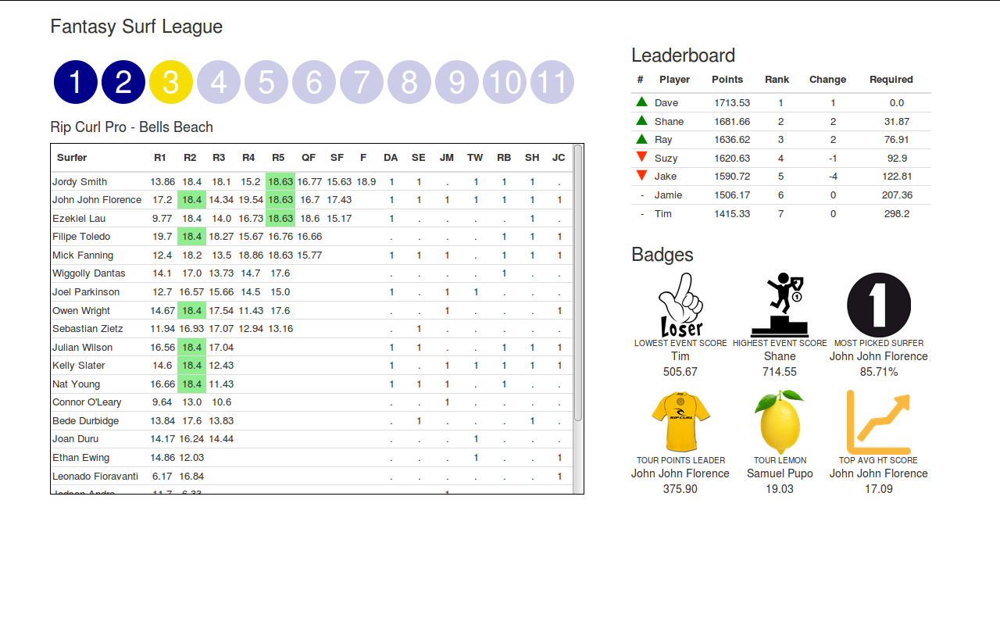

User Interface¶
The dashboard contains four main areas each requiring a different set of data. The four areas (clockwise from top left) include 1) event selection buttons, 2) leaderboard, 3) badges, and 4) surfer selections and results. All of the required information to generate these areas of the dashboard are passed from the “context” dictionary in views.py.
Most of the information is reduced to a list or dictionary. However, I have transformed the data in two ways. First, the leaderboard is reduced to the required data before it reaches the Django app, and second, the surfer selection and results area is entirely processed in views.py. The data processing has occurred this way because I already had a vision of what the leaderboard should look like, but the selection area required a little prototyping in building the html layout before I knew what it should look like. Unless I get complaints about performance issues then this method of processing these data will stay as it is.
I used a variety of ways to pass data across to the webpage. I will cover them here as a reference for later.
QUERYSET¶
The queryset is provides all filtered information from the Django model. Access to these data can be done using dot notation and the name of model fields. Another process to note is the use of the templatetag “{{ position.accumulated | floatformat:”2” }}” to round the values in the “accumulated” field to 2 decimal places. I have created several custom templatetags which are stored in “fantasy/dashboard/templatetags/dashboard_extras.py”. Reminder: Templatetags need to be imported in a similar way to static files (I.e. at the top of the html page type: {% load dashboard_extras %}).
views.py
def championshiptour(request, eventid):
# Processing...
leaderboard = FantasyLeaderBoard.objects.using(
'fantasydb').filter(event_id=str(eventid))
context = {# Other data...
'leaderboard': leaderboard }
# render page
return render(request, 'dashboard/index.html', context)
index.html
<!--process context -->
<div class="table-responsive">
<table class="table">
<thead>
<tr>
<th>#</th>
<th align="left">Player</th>
<th align="center">Points</th>
<th align="center">Rank</th>
<th align="center">Change</th>
<th align="center">Required</th>
</tr>
</thead>
<tbody>
{% for position in leaderboard %}
<tr>
<!-- Provide an Icon for rank change -->
{% if position.rankchange >= 1 %}
<td align="center"><img src="{% static 'img/up.png' %}" style="width:15px;height:15px;"/></td>
{% elif position.rankchange <= -1 %}
<td align="center"><img src="{% static 'img/dn.png' %}" style="width:15px;height:15px;"/></td>
{% else %}
<td align="center">-</td>
{% endif %}
<!-- Add remaining fields -->
<td align="left">{{ position.player_name}}</td>
<td align="center">{{ position.accumulated | floatformat:"2" }}</td>
<td align="center">{{ position.tourrank }}</td>
<td align="center">{{ position.rankchange }}</td>
<td align="center">{{ position.requiredpoints }}</td>
</tr>
{% endfor %}
</tbody>
</table>
</div>
LIST¶
A “list” or in many of my cases a “list of lists” was a common method that I used to pass grouped information processed in views.py. Here dot notation is used but the values are called as positions. For example, imagine that you pass myList=[[1,2],[3,4]] to the page, you can access the last position of the second list by typing myList.1.1 (zero indexing).
views.py
def championshiptour(request, eventid):
# Processing...
# place holder for results
mostpickedsurfer = []
# count each surfer in picks
for s in list(picks_surfers):
mps = [s, (list(surferlist).count(s)/numselections)*100]
mostpickedsurfer.append(mps)
# sort function
def SortByMaxPoints(elem):
return elem[1]
# sort
mps = sorted(mostpickedsurfer, key=SortByMaxPoints, reverse=True)
context = {# Other data...
'mps': mps }
# render page
return render(request, 'dashboard/index.html', context)
index.html
{% for line in res %}
<tr>
<td>{{line.0}}</td>
<td align="center">{{line.1.0.0}}</td>
<!-- Handle bonus rounds -->
{% if line.1.1.1 == 'b' %}
<td title="Bonus Round" align="center" style="background:lightgreen">{{line.1.1.0}}</td>
{% else %}
<td align="center">{{line.1.1.0}}</td>
{% endif %}
<!-- more processing of the list of lists....-->
</tr>
{% endfor %}
VALUE¶
Here I pass the eventid straight through unmodified. The reason I do this is to change the colour of the event selection circle/button to signify what data is being viewed.
views.py
def championshiptour(request, eventid):
# Processing...
context = {# Other data...
'eventid':eventid }
# render page
return render(request, 'dashboard/index.html', context)
index.html
<!-- Note that the data type is string not integer -->
{% if eventid == "1" %}
<div class="stop-image" style="background: rgb(245, 222, 0)">
1
</div>
{% else %}
<a href="{% url 'championshiptour' '1' %}">
<div class="stop-image">1</div>
</a>
{% endif %}